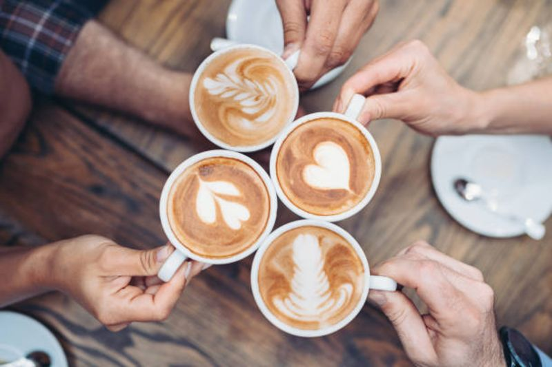

Om oss
Vi är ett litet café med stort hjärta.
Vår historia
Café Drape öppnade sina dörrar 2012 med en enkel idé - att servera riktigt bra kaffe i ett bra café. Det som började som ett litet café har vuxit till ett av stadens mest älskade cafén.
Vi tror på att ta det lugnt, njuta av en kopp kaffe och ta en paus från vardagen. Allt vi serverar är hembakat eller tillagat från grunden varje dag.

Det vi tror på
-
Kvalitet
Vi väljer råvaror med omsorg och samarbetar med lokala leverantörer för att hålla hög kvalitet på allt vi serverar.
-
Hållbarhet
Vi minimerar matsvinnet, källsorterar och köper in ekologiska råvaror där det är möjligt.
-
Gemenskap
Cafét är en mötesplats för alla. Vi vill att alla ska känna sig välkomna.